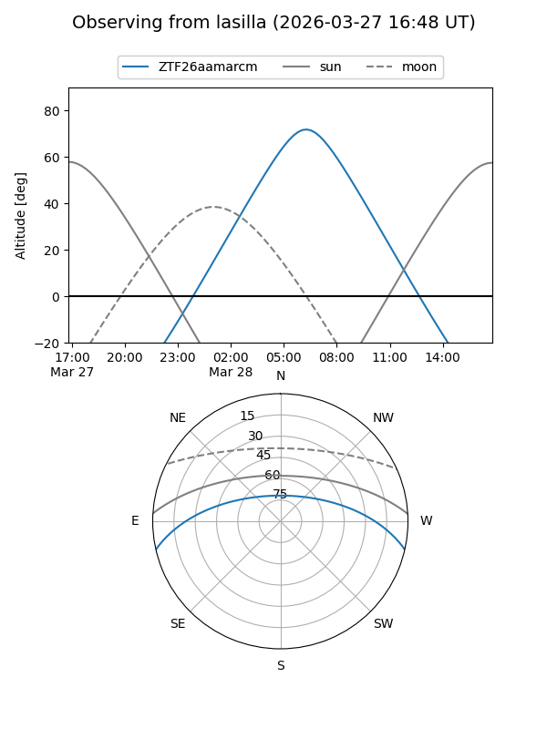
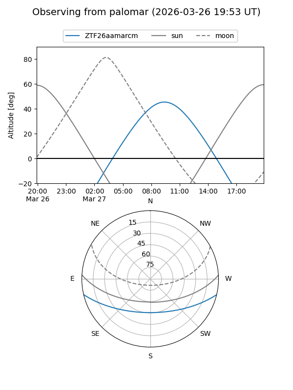

ZTF26aamarcm
Target ZTF26aamarcm at 2026-03-27 11:23
Aliases and brokers:
FINK: link
Lasair: link
ALeRCE: link
alt names
ZTF26aamarcm (ztf,fink_ztf)
Coordinates:
equatorial (ra, dec) = 208.5507,-11.02906
equatorial (HMS+DMS) = 13:54:12.17,-11:01:44.61
galactic (l, b) = (326.7576,+48.91740)
Flags:
Photometry:
last ztfg=17.76
1 ztfg detections
Lightcurve
Visibility


Additional plots